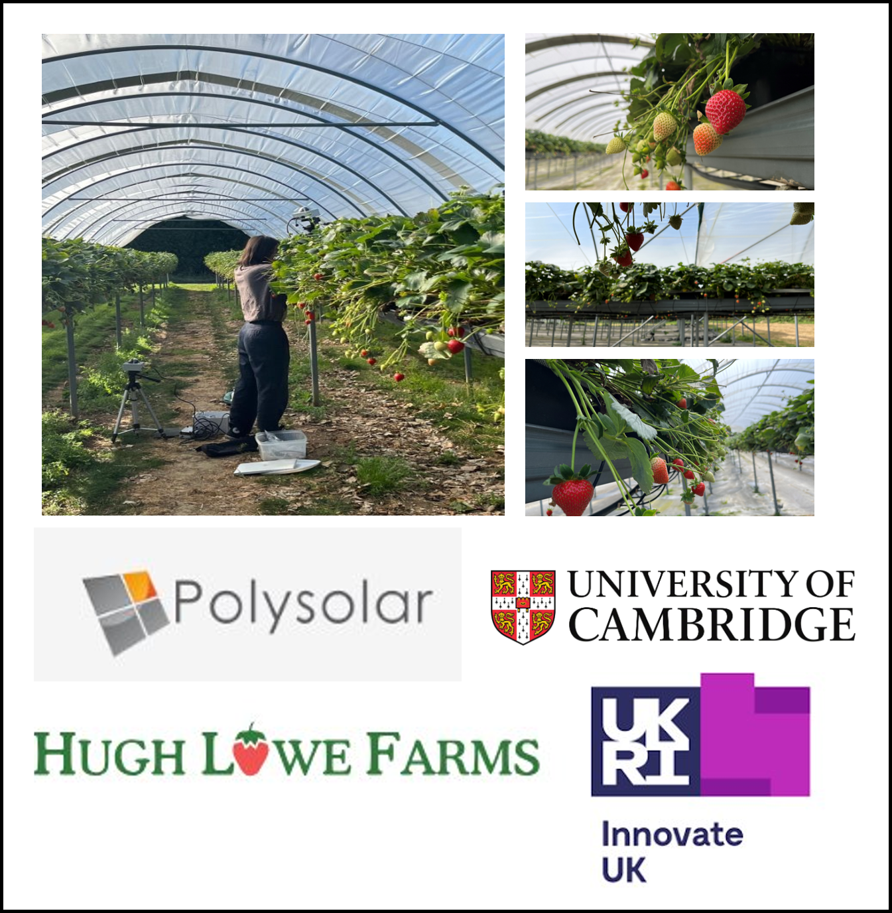

Agrivoltaics Research
Postdoctoral Research Fellow | University of Greenwich | Innovate UK-funded project | 2023–2025

- Investigated how different solar panel placements influence crop performance and energy efficiency, contributing to optimised agrivoltaic system design.
- Designed the data collection strategy, including a custom data entry form and a streamlined workflow for data analysis and visualisation. Developed Python scripts to automate data processing, created advanced visualisations to present key findings and shared these insights effectively with collaborators.
- Coordinate across departments and proactively seek support when needed to ensure field experiments were carried out on schedule and with the required resources.
- Collaborated extensively with academic researchers, industry partners and cross-functional teams to align research objectives, share knowledge and incorporate feedback, ensuring that the project remained on track and that findings were applied to real-world agrivoltaic solutions. This collaboration resulted in actionable insights that informed future designs for energy-efficient agricultural systems.